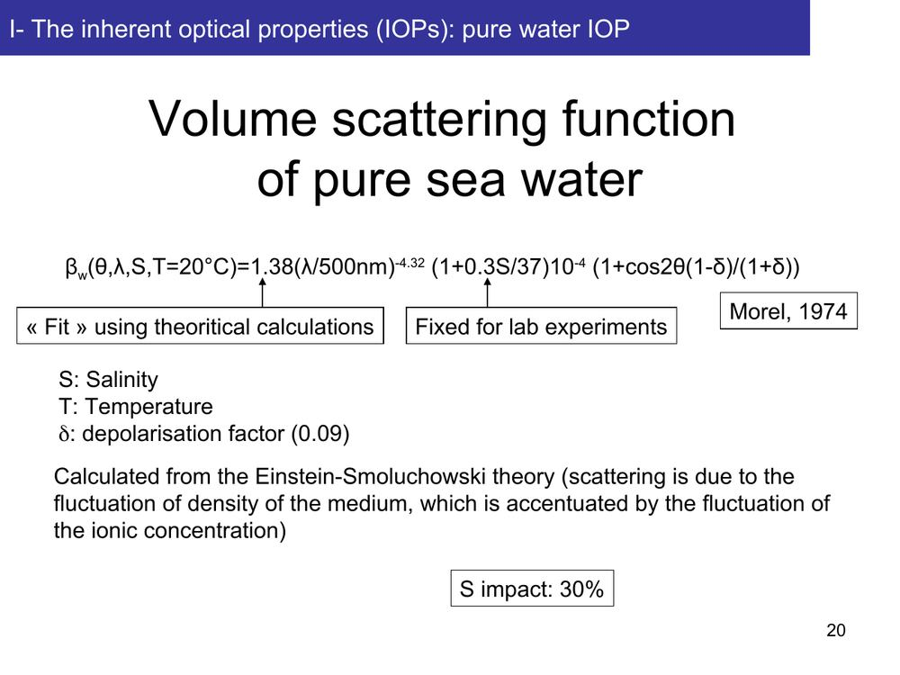
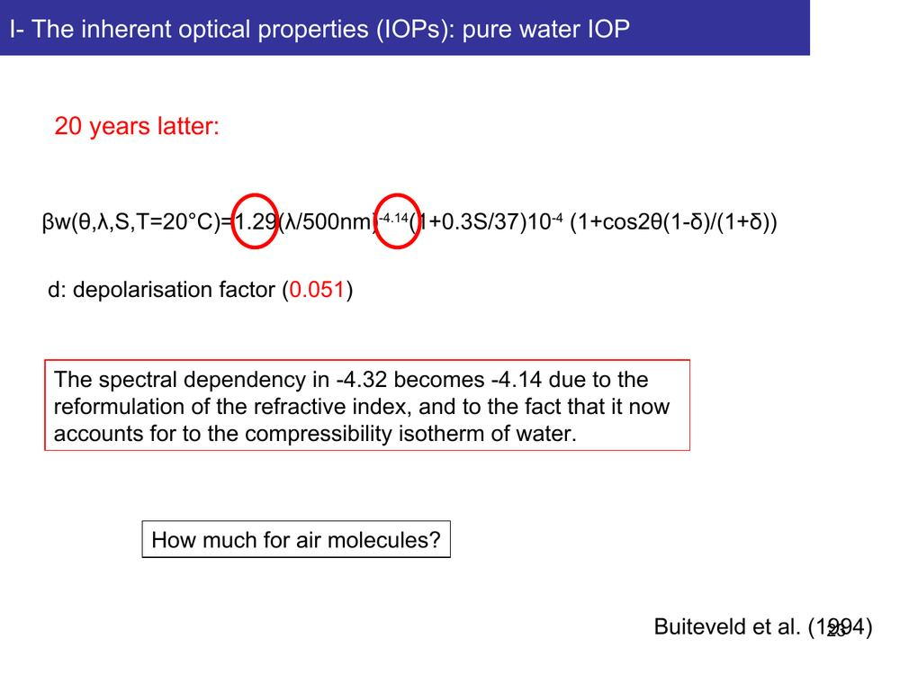
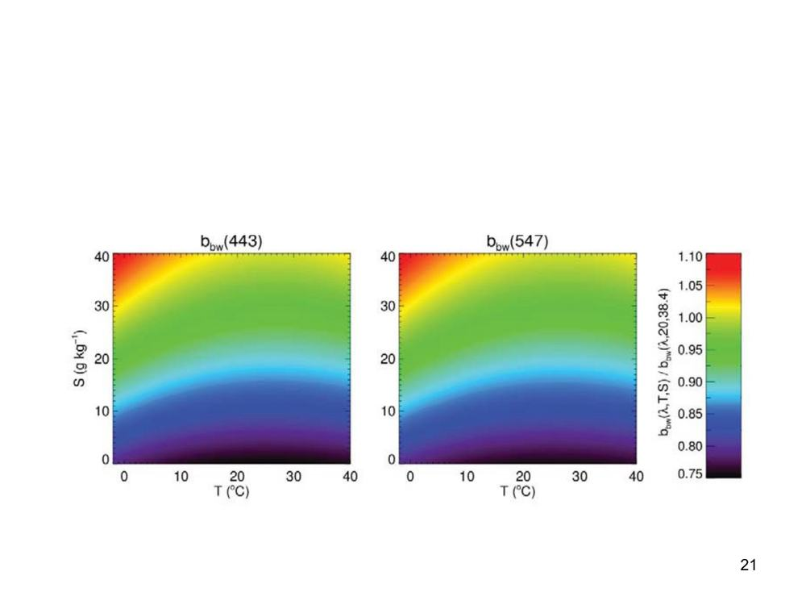
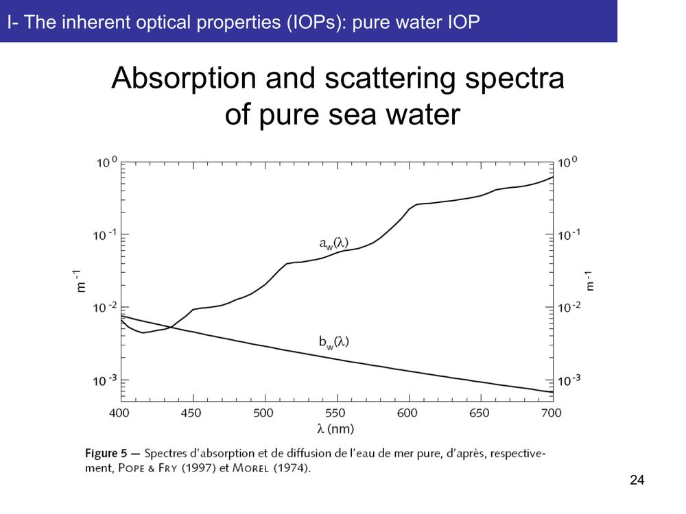
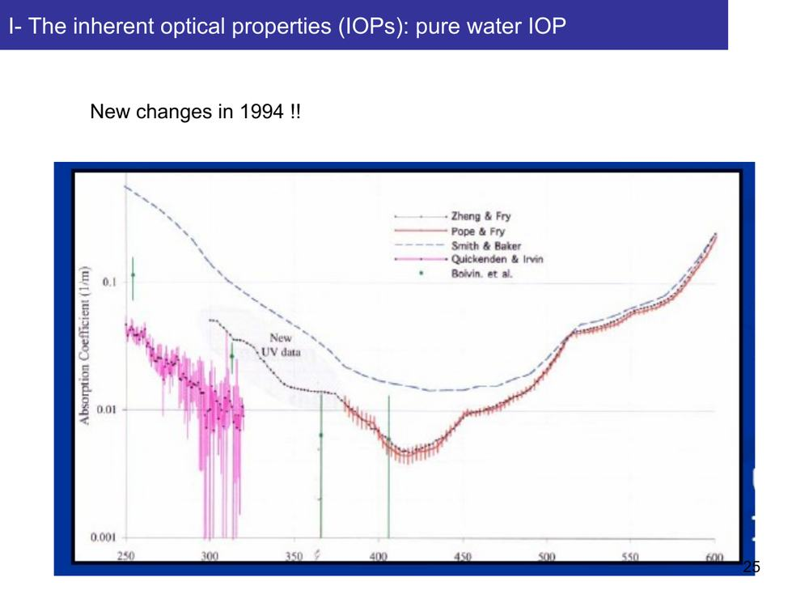

B · Pure water
Pure-water absorption and scattering (slides 20–27)
Pure sea water: scattering formula

Lecture slide 20
- βw = 1.38 (λ/500)−4.32
- (1 + 0.3 S/37)
- [1 + cos²θ (1−δ)/(1+δ)], δ = 0.09
- Einstein–Smoluchowski: density fluctuations
Revision by Buiteveld et al. (1994)

Lecture slide 23
- 1.38 → 1.29
- λ−4.32 → λ−4.14
- δ: 0.09 → 0.051
- Refractive index and compressibility
Pure-water VSF versus angle

Own computation from the slide-20 formula, S = 37 (compare lecture slide 22)
Temperature and salinity effect

Lecture slide 21
- Ratio to T = 20 °C, S = 38.4
- Range 0.75 – 1.10
- Salinity matters most
- +30 % for S = 37 (slide 20)
Scattering of pure water: numbers
| Quantity | Value (verified) |
|---|---|
| bw(500), S = 37 | 2.88 × 10⁻³ m⁻¹ |
| bw(500), S = 0 | 2.22 × 10⁻³ m⁻¹ |
| bbw / bw | 0.5 |
| Ratio 450/550 nm (−4.32 | −4.14 | −4) | 2.38 | 2.30 | 2.23 |
Method
cos²θ reading of the slide; closed form and numerical integration agree (Python)Pure-water spectra aw and bw

Lecture slide 24
- aw: minimum ≈ 0.005 m⁻¹ near 415 nm
- aw rises beyond 550 nm
- bw falls smoothly with λ
- Curves cross near 430–440 nm
Absorption in the blue and UV is uncertain

Lecture slide 25
- Five data sets
- Smith & Baker ≈ 3× higher at 415 nm
- New UV data (1994)
The clearest natural waters

Lecture slide 26
- atot ≈ 0.007 m⁻¹ at 410–420 nm
- 0.045 m⁻¹ at 310 nm
- Half the accepted pure-water value
- Particles ≈ 15 % of atot
Key points
- βw ∝ λ−4.32 (−4.14 later); bbw = bw/2
- Salinity: +30 %; temperature: weak
- aw minimum in the blue, strong rise in the red
- Blue/UV absorption: data sets still disagree